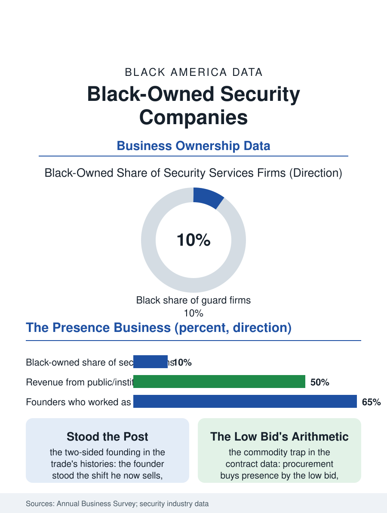

Black Business
Stood the Post: Black-Owned Security Companies
The founder stood the post he now staffs, in the industry that sells presence by the low bid. The guard company file.

The private security firm is the business section's quiet giant: the guard companies that staff the buildings, the events, and the retail floors employ a heavily Black workforce and include, at the ownership tier, a class of Black-founded firms that have grown from the owner's own post into regional and national contractors. The business census counts the security services firms in the thousands. This article reads the guard company file.
From the Post to the Portfolio
The founding story repeats across the trade's oral histories with the regularity of the other service files': the founder worked the post, the overnight desk and the event's gate, learned the client's contract and the guard's grievance in the same years, and founded the firm on the two-sided knowledge, the bid priced by the person who had stood the shift it sold. The industry's structure then ladders the firm upward: the single-site contract, the multi-site route, the institutional and municipal awards whose certification requirements, the disadvantaged and veteran designations, the bonding and the insurance minimums, compose the gate the growing firm must finance its way through, with the public market, the transit systems, the housing authorities, the hospitals' and universities' outsourced security, supplying the multi-year revenue the ladder's rungs require. The workforce is the product in a sense no other file matches: the firm sells its guards' presence, so its recruiting, its training hours beyond the state's licensed floor, its supervision ratios, and its uniform are the quality system entire, and the established firms' pitch to the institutional client is the file's own: the guard as the client's public face at the door, vetted and retained at rates the low-bid competitor's turnover cannot match. The armed tier's licensing and the unarmed post's lower gate make the firm's internal ladder a version of the workforce's own, the guard rising to the supervisor's radio and the account manager's desk inside the same company's colors.
The Low Bid's Trap
The contract's economics are the industry's standing tension: security is bought as a commodity by the procurement offices, the bill rate driven toward the wage plus the statutory minimum of margin, so that the firm's survival skills are the schedule's density, the overtime's management, and the contract mix's balance between the low-bid volume that fills the roster and the premium accounts, the executive protection and the event and the federal tiers, whose rates carry the firm's overhead. The liability file is the trade's particular weight: the guard's encounter, the detention and the force continuum, is the firm's legal exposure entire, its insurance priced by the incident history, so that the training and the supervision are the risk department as much as the quality one, and the reputable firm's incident file is its balance sheet's quiet core. The consolidation of the industry's top, the global firms' roll-up of the nationals, has repriced the independent's exit as in the other service files, while the local firm's defense remains the relationship density the national's rotation cannot keep.
Presence as the Product
The guard company file closes on the workforce's meaning in the community's account, because the firm is among the largest employers of the neighborhood's men in the cities where it is rooted, the post being the job the record and the license files argue about in their own chapters, the guard card being among the attainable credentials the returning and the young worker can actually hold, a fact the firms' founders, who held the same card, build their recruiting on deliberately. The public safety debate's current chapter, the private guard as the visible order of the retail and transit spaces, has made the firm's training and accountability a civic question as well as a contract's, and the Black-owned firm's position in that debate is the file's final complexity, the community's own firm policing the community's own spaces on the client's contract, an arrangement whose legitimacy the firms work to earn in the open. The census counts the firms in the thousands, their payrolls among the service sector's largest. The file's last entry is the post at the building's door at midnight, staffed by the founder's own first job's successor, under a contract the founder's name signs, which is the service economy's ladder drawn in one doorway: the man who stood it, owning the company that staffs it.
More in Black Business
Black-Owned Businesses: Counts, Receipts, and the Representation Gap
About 161,000 Black-owned employer firms and three million solo ventures: how the Census Bureau counts Black business ownership, where firms concentrate, and the gap between population share and business share.
Black Median Net Worth: The Wealth Gap in Federal Reserve Data
The Federal Reserve puts Black median family net worth at $44,900, against $285,000 for White families — about 16 cents on the dollar. The widest gap in economic data.
Black Buying Power: The $1.8 Trillion Consumer Economy
Black buying power is estimated at about $1.8 trillion — larger than the economy of most nations. What the figure measures, who produces it, and what it buys.
Source: U.S. Census Bureau, Annual Business Survey for investigation and security services; ASIS International industry data.